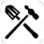
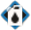
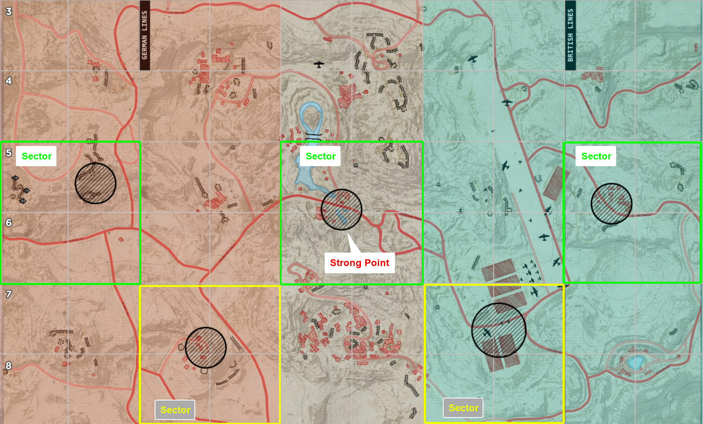

Beginners Guide
Introduction
This guide is meant to get new players quickly introduced to basic game mechanics. Please use your microphone in game to communicate with your squad.
Server Browser
{kind=link}
- It's recommended you sort the list by "Ping" column to find low latency servers.
- Avoid official servers (can be unchecked through the filter), community hosted servers are better moderated especially against cheaters.
- It's normal to wait in queue for 5-10 minutes to join a server that is full.
Server Info Card
{kind=link}
1. Join Server button
2. Total players in servers
3. 3 VIPs currently in game, 2 VIP slots available. Server will fill up to 98 players and reserve 2 slots (99 and 100) for VIP status players. This allows VIPs to skip the regular queue.
4. Queue to join the game. 4 players currently waiting in queue, 6 is the maxiumum players the queue can hold.
Spawn Screen
{kind=link}
Deployment screen
1. Select the arrow button beside squad icon to join a squad. As a beginner join an Infantry squad, do not join Armor or Recon squad.
- Note: Do not create a new squad, you'll be locked in Squad Officer role which is only recommended for experienced players.
{kind=link}
2. Select spawn point from the list on the right or click one on the map in the middle.
3. Click deploy button and wait for the timer.
{kind=link}
Loadout screen
- Click "Change Role" near bottom left to go to your loadout screen. Here you can pick different roles (1) and loadout (2). Note, there are limitations to amount of specific roles per squad.
- Good beginner role is Rifleman, after gaining an understanding of the game, you can try playing Support/Medic role.
Infantry Roles
Rifleman – Standard infantry with a rifle. Excellent way to learn the game.
{kind=link}
Assault – Close-quarters specialist with SMG or shotgun.
{kind=link}
Support – Carries ammo boxes and 
{kind=link}
{kind=link}
{kind=link}
Medic – Revives and heals downed teammates.
{kind=link}
Automatic Rifleman – Carry automatic rifles; bridges gap between Rifleman and MG.
{kind=link}
Machine Gunner – Lays down heavy suppressive fire from distance; excels at locking down lanes and choke points.
{kind=link}
Anti-Tank – Equipped with anti-tank weapons; responsible for taking out enemy armor.
{kind=link}
Engineer – Builds fortifications and nodes 
{kind=link}
{kind=link}
{kind=link}
{kind=link}
Officer – AKA squad leader. Leads the squad, places outposts/garrisons using supplies, and communicates with commander and other officers.
Map View
{kind=link}
Important icons to note on map screen
- HQ: 3 spawn points edge of the map you can redeploy at.
- Garrison: A forward spawn point built by a officer/commander, anyone on the team can respawn on it.
- Outpost: A spawn point built by your officer, only your squad can respawn on it.
- Airhead: Deployed by commander, anyone on the team can respawn on it.
{kind=link}
{kind=link}
{kind=link}
{kind=link}
{kind=link}
-
If a spawn point shows up with a ping icon, it means enemy is nearby. Caution is advised.
-
If spawn point turns red, you'll be unable to deploy to it as there is enemy right next to the spawn point which is locking it out.
{kind=link}
Game Modes
Warfare Game Mode

{kind=link}
- The goal is to capture and hold more sectors with strong points (minimum 3) than the enemy by the end of the timer. Alternatively, capture all sectors (5) and win outright.
- The map is divided into 15 sectors (2x2 grids). Each 2x6 grid has one strong point (black circle).
- Each teams has 3 HQ spawns available with a respawn timer of 10 seconds at the edge of the map.
- Middle strong point is neutral at the beginning of match.
- Capturing a strong point rewards the whole 2x6 grid of the map to your team.
- You can only capture the next available strong point, you cannot capture the strong point behind the active strong points.
- Garrisons, Outpost (OPs), Half-tracks, and Airheads can be used as additional respawn points.
- Garrisons and Outposts are immediately lost in the sectors that gets captured by enemy, new ones must be built.
{kind=link}
Capturing Sector
{kind=link}
- A player standing inside the black strong point circle counts as 3.
- A player standing in a 2x2 grid sector around the active strong point counts as 1.
- Capture power has no affect on speed of the capture. The capture time in warfare is always 2 minutes.
Offensive Game Mode
- There is an attacking team and a defending team.
- No recapturing of objective is allowed.
- Only players inside strong point (black circle) count toward capturing power.
- Attacking team has 30 minutes to capture strong point to gain sector control and advance an attack to next sector.
- 30 minute timer resets each time attacking team captures a strong point.
- Overtime will be initiated if the strong point is contested when timer runs out.
- Attackers win if they push defenders all the way back and capture enemy HQ sector.
- Attackers only get one HQ spawn in the beginning, they must work to build additional spawn points.
- Defenders have 3 HQ spawn points plus an additional 3 garrisons at the frontline at the beginning of round.
{kind=link}
View of a defender's map, note the 3 garrisons placed near the frontline.
General Tips
{kind=link}
Each large grid square on the map is 200x200 meters. The minimum distance between garrison placement is 200 meters as well. Use this as your guide for placing supplies and garrisons.
Use "Redeploy" button in the Esc menu whenever needed. There is no real penalty to using it other than extra 10 second respawn time. Use it to quickly spawn back on defense when sectors change hand and you're too far away. The same principle applies if you're attacking.
Do not move or start the engine of the half-track unless instructed by a officer or commander. They need to be placed carefully on the map and allow for team to spawn when engine is turned off.
Leave supply trucks for Engineers to build nodes or Officer/Commander to build garrison.
{kind=link}
Grenades have no affect on enemy tanks, you need a sachel or AT weapon to destroy them.
Supplies
Supplies are essential part of winning. Supplies allow officers or commanders to build garrisons so the team can redeploy near the objective. They also allow Engineers to build nodes which increase rate at which resources generate per minute for commander to use their various abilities.
{kind=link}
- 50 supplies are needed to build a garrison in blue/friendly zone.
- 100 supplies are needed to build a garrison in red/enemy zone.
- 50 supplies are need to build one resource node by an Engineer.
- The cost of supplies to build fortification structures varies by each structure.
- 50 supplies are needed to build an AT-Gun, it can only be built by Anti-Tank role with the correct kit.